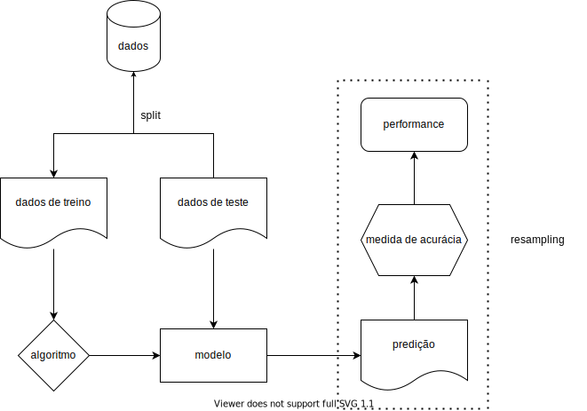

Esse é o primeiro post de uma série que irá tratar sobre o ecossistema {mlr3} (Lang et al. 2019). Ele é mais completo e também muito mais complexo do que seu predecessor, o {mlr}, que teve sua versão inicial publicada no CRAN em 2013. O ecossistema permite um framework agnóstico (i.e. não depende dos algoritmos escolhidos), extensível e orientado a objeto, e, atualmente, permite vários tipos de tarefas, como classificação, regressão, análise de sobrevivência, forecasting, clustering, dentre outros. O {mlr3} tem diversas vantagens que o faz, IMHO, o framework mais completo para se trabalhar machine learning em R (R Core Team 2020) e elas ficarão claras ao longo dos próximos posts.
INTRODUÇÃO
O workflow padrão de um projeto de machine learning consiste em:
- dividir sua amostra em treino e teste (split);
- escolher o algoritmo apropriado para o tipo de tarefa;
- passar a amostra de treino ao algoritmo para criar um modelo do relacionamento entre a variável de resposta (output features) e as explicativas (input features);
- passar os dados de testes ao modelo treinado para produzir predições;
- comparar as predições com os dados da amostra;
- mensurar a performance do modelo através de medidas de acurácia estabelecidas.

O processo de repetir esse workflow várias vezes, separando a amostra treino em várias partes diferentes e usando outras como fake test samples é chamado de resampling, um processo vital para a etapa de calibragem e para evitar o overfitting.
Dependendo dos dados, do tipo de tarefa e algoritmo escolhido, podem ser necessários vários filtros, como normalização, feature selection e tratamento de outliers ou dados faltantes. Para esses casos, o {mlr3} tem novas soluções que se destacam com muita vantagem em relação não só ao seu predecessor {mlr} como também a outros frameworks de machine learning em R, como o {caret} e o {tidymodels}.
CARACTERÍSTICAS DE DESIGN
Alguns princípios gerais que norteiam o desenvolvimento do pacote e afetam muito seu uso são:
Foco no backend. A maioria dos pacotes do ecossistema tem objetivo de processar e transformar dados, aplicar algoritmos e computar resultados. Visualizações são providenciadas em pacotes externos;
Adoção da classe R6 (Chang 2020) para design orientado a objeto, modify-in-place e semântica de referência (falaremos um pouco sobre esses conceitos adiante);
Adoção do {data.table} (Dowle and Srinivasan 2020) para manipulações de data frames. A combinação {R6} + {data.table} torna a performance um dos pontos fortes do ecossistema.
Baixa dependência. Entretanto, os algortimos não são implementados no ecossistema, como no scikit-learn em Python. Para executar o XGBoost (Chen et al. 2020), por exemplo, deve-se ter instalado o pacote que o implementa.
FORA DO ESCOPO
Como se trata de uma introdução, as etapas de tunning e resampling, assim como funcionalidades como os pipelines, serão abordadas em postagens futuras. Neste post trataremos apenas os conceitos básicos do workflow.
DIRETO AO PONTO
Para conhecer as funcionalidades básicas do pacote, usaremos um dos datasets inclusos no R, o swiss. Esse dataset consiste na medição padronizada da fertilidade e indicadores socioeconômicos de 47 províncias da Suíça em 1888.
{{% highlight "r" %}}
# criando dataframe
data = swiss
# overview
skimr::skim(data)
{{% /highlight %}}
Table 1: Data summary
| Name |
data |
| Number of rows |
47 |
| Number of columns |
6 |
| _______________________ |
|
| Column type frequency: |
|
| numeric |
6 |
| ________________________ |
|
| Group variables |
None |
Variable type: numeric
| Fertility |
0 |
1 |
70.14 |
12.49 |
35.00 |
64.70 |
70.40 |
78.45 |
92.5 |
▂▂▇▇▅ |
| Agriculture |
0 |
1 |
50.66 |
22.71 |
1.20 |
35.90 |
54.10 |
67.65 |
89.7 |
▃▃▆▇▅ |
| Examination |
0 |
1 |
16.49 |
7.98 |
3.00 |
12.00 |
16.00 |
22.00 |
37.0 |
▅▇▆▂▂ |
| Education |
0 |
1 |
10.98 |
9.62 |
1.00 |
6.00 |
8.00 |
12.00 |
53.0 |
▇▃▁▁▁ |
| Catholic |
0 |
1 |
41.14 |
41.70 |
2.15 |
5.20 |
15.14 |
93.12 |
100.0 |
▇▁▁▁▅ |
| Infant.Mortality |
0 |
1 |
19.94 |
2.91 |
10.80 |
18.15 |
20.00 |
21.70 |
26.6 |
▁▂▇▆▂ |
Dentre as vari]]áveis disponíveis, podemos escolher modelar a mortalidade infantil Infant.Mortality baseada nas demais features, que são:
Fertility: Medida de fertilidade. Assim como a mortalidade infantil, está escalonada entre 0-100.Agriculture: Percentual de homens envolvidos em agricultura como ocupação.Examination: Percentual de alistados bem avaliados nos exames do exército.Education: Percentual dos alistados com educação superior ao primário.Catholic: Percentual de católicos (em oposto a protestantes).
O workflow começa pela criação da task, que é um objeto que contém os dados e informações sobre a tarefa a ser executada, como a variável de resposta e as demais features, além de seus tipos. Como queremos realizar predições para uma variável numérica contínua, é uma tarefa de regressão.
{{% highlight "r" %}}
# importando pacote
library(mlr3verse)
# criando task
task_swiss = TaskRegr$new(
id = "swiss",
backend = data,
target = "Infant.Mortality"
)
{{% /highlight %}}
Notou algo estranho? Como o {mlr3} trabalha com a classe R6, seu manuseio é mais parecido com outras linguagens orientadas a objeto, como o Python. Essa classe tem duas propriedades especiais:
Métodos pertencem a objetos e são chamados na forma objeto$metodo() e não como funções genéricas como foo(). Esse é o paradigma OOP (programação orientada à objetos). No caso acima, não há uma função para criar uma task como task_regr_new(), mas um método new() associado ao objeto TaskRegr;
Os objetos da classe R6 são mutáveis, ou seja, eles são modificados no local (modify-in-place) e, portanto, têm semântica de referência. Isso significa que eles não são copiados a cada modificação, como os data frames comuns (classe S3), o que é um fator de alocação de memória e, consequentemente, lentidão.
O efeito colateral é que isso não é muito familiar para pessoas que não conhecem outras linguagens de programação além do R e no início pode parecer pouco natural e confuso.
Criado o objeto, podemos acessá-lo para verificar e visualizar as informações ali contidas:
{{% highlight "r" %}}
# verificando
task_swiss
# visualizando
autoplot(task_swiss, type = "pairs")
{{% /highlight %}}
## <TaskRegr:swiss> (47 x 6)
## * Target: Infant.Mortality
## * Properties: -
## * Features (5):
## - dbl (3): Agriculture, Catholic, Fertility
## - int (2): Education, Examination

Podemos ver que apenas a fertilidade é linearmente correlacionada com a mortalidade infantil — quanto maior a fertilidade, maior a mortalidade —, e podemos esperar que tenha maior peso nas predições. As demais variáveis não apresentam correlação linear significativa com a variável de resposta. Entretanto, apresentam correlação moderada ou forte entre si, mas não a ponto de apresentar colinearidade, o que demandaria tratamento.
Agora selecionamos o algoritmo que será usado para treinar o modelo. Escolhi aqui o XGBoost. A lista completa pode ser acessada por essa lista estática, por essa lista dinâmica ou pela função mlr3extralearners::list_mlr3learners(). Como mencionado anteriormente, os algoritmos não são implementados pelo ecossistema do {mlr3} e nas listas citadas constam os pacotes onde os algoritmos foram implementados e que devem ser baixados para o seu uso.
{{% highlight "r" %}}
# definindo o learner
l_xgboost = lrn("regr.xgboost")
# checando
l_xgboost
{{% /highlight %}}
## <LearnerRegrXgboost:regr.xgboost>
## * Model: -
## * Parameters: nrounds=1, nthread=1, verbose=0
## * Packages: xgboost
## * Predict Type: response
## * Feature types: logical, integer, numeric
## * Properties: importance, missings, weights
Vamos entender o que o objeto l_xgboost nos diz.
- Model: Vazio, pois ainda não há um modelo treinado;
- Parameters: Os hiperparâmetros a serem escolhidos e tunados para performance do modelo;
- Packages: O pacote onde o algorítmo foi implementado e de onde será importado pelo {mlr3};
- Predict Type: Se
response a predição é retornada como 0 ou 1, no caso de classificação, ou num valor para variável de resposta, no caso de regressão — neste caso, será a mortalidade infantil escalonada no intervalo [1, 100]. Se “prob,” para classificação, a predição retorna a probabilidade entre 0 e 1;
- Feature Type: Os tipos de variáveis que o algoritmo é capaz de manipular. No caso do XGBoost, por exemplo, apenas variáveis numéricas podem ser utilizadas. Isso quer dizer que os fatores devem ser convertidos em valores binários (i.e. 0 ou 1), ou seja, deve-se tornar a matriz esparsa — no caso de um fator
sexo, por exemplo, na fase de pre-processamento seriam criadas as colunas sexo.masculino, com valores de 1 ou 0, e sexo.feminino, também com 1 ou 0;
- Properties: Propriedades e capacidades adicionais do algoritmo. Neste caso, o XGBoost possui a capacidade de computar e retornar os valores da importância das features para o modelo; a capacidade de trabalhar com dados faltantes (missings); a capacidade de computar e retornar os pesos associados às features.
Como pode ver em parameters, não há nenhum hiperparâmetro configurado. Podemos acessá-los da seguinte maneira:
{{% highlight "r" %}}
# acessando hiperparâmetros
head(as.data.table(l_xgboost$param_set))
{{% /highlight %}}
## id class lower upper levels nlevels
## 1: booster ParamFct NA NA gbtree,gblinear,dart 3
## 2: watchlist ParamUty NA NA Inf
## 3: eta ParamDbl 0 1 Inf
## 4: gamma ParamDbl 0 Inf Inf
## 5: max_depth ParamInt 0 Inf Inf
## 6: min_child_weight ParamDbl 0 Inf Inf
## is_bounded special_vals default storage_type tags
## 1: TRUE <list[0]> gbtree character train
## 2: FALSE <list[0]> list train
## 3: TRUE <list[0]> 0.3 numeric train
## 4: FALSE <list[0]> 0 numeric train
## 5: FALSE <list[0]> 6 integer train
## 6: FALSE <list[0]> 1 numeric train
Como o tunning de hiperparâmetros não é o assunto, vamos apenas configurar algumas coisas básicas para demonstrar como essas informações são acessadas e modificadas. O método para isso é o param_set$values:
{{% highlight "r" %}}
# hiperparâmetros
l_xgboost$param_set$values = list(
# mandando o algoritmo parar depois de 10 iterações sem melhora no score
early_stopping_rounds = 10,
# mandando o algoritmo treinar mais lentamente
eta = 0.1,
# limitando profundidade da árvore
max_depth = 5,
# quantidade máxima de iterações
nrounds = 100
)
# verificando
l_xgboost
{{% /highlight %}}
## <LearnerRegrXgboost:regr.xgboost>
## * Model: -
## * Parameters: early_stopping_rounds=10, eta=0.1, max_depth=5,
## nrounds=100
## * Packages: xgboost
## * Predict Type: response
## * Feature types: logical, integer, numeric
## * Properties: importance, missings, weights
TREINO E PREDIÇÃO
As próximas etapas são o treino e a predição — trataremos de tunning e resampling nos próximos posts. Primeiramente, o split do dataset em treino e teste. Para isso, usaremos a função sample() em dois métodos do objeto task_swiss, o row_ids e nrow. O primeiro enumera os índices de cada linha:
{{% highlight "r" %}}
# método row_ids
task_swiss$row_ids
{{% /highlight %}}
## [1] 1 2 3 4 5 6 7 8 9 10 11 12 13 14 15 16 17 18 19 20 21 22 23 24 25
## [26] 26 27 28 29 30 31 32 33 34 35 36 37 38 39 40 41 42 43 44 45 46 47
Enquanto o segundo retorna a quantidade de linhas do dataset:
{{% highlight "r" %}}
# método row_ids
task_swiss$nrow
{{% /highlight %}}
## [1] 47
Assim, podemos selecionar os índice do dataset em duas amostras aleatórias:
{{% highlight "r" %}}
# garantindo reprodutibilidade
set.seed(1)
# índices para amostra treino
train_set = sample(task_swiss$row_ids, 0.7 * task_swiss$nrow)
# índices para amostra teste
test_set = setdiff(task_swiss$row_ids, train_set)
# verificando
head(train_set)
{{% /highlight %}}
## [1] 4 39 1 34 23 14
Com os índices selecionados, podemos realizar nosso treino apenas nos 70% escolhidos aleatoriamente da amostra, sem copiar os dados e alocar memória desnecessariamente:
{{% highlight "r" %}}
# treino
l_xgboost$train(task_swiss, row_ids = train_set)
# verificando
l_xgboost$model
{{% /highlight %}}
## [10:21:01] WARNING: amalgamation/../src/objective/regression_obj.cu:171: reg:linear is now deprecated in favor of reg:squarederror.
## [1] train-rmse:17.686886
## Will train until train_rmse hasn't improved in 10 rounds.
##
## [2] train-rmse:16.014399
## [3] train-rmse:14.506416
## [4] train-rmse:13.147319
## [5] train-rmse:11.924172
## [6] train-rmse:10.822335
## [7] train-rmse:9.832130
## [8] train-rmse:8.940679
## [9] train-rmse:8.136598
## [10] train-rmse:7.413037
## [11] train-rmse:6.760063
## [12] train-rmse:6.173677
## [13] train-rmse:5.647888
## [14] train-rmse:5.177068
## [15] train-rmse:4.751254
## [16] train-rmse:4.367561
## [17] train-rmse:4.022047
## [18] train-rmse:3.705540
## [19] train-rmse:3.421478
## [20] train-rmse:3.165364
## [21] train-rmse:2.923110
## [22] train-rmse:2.709535
## [23] train-rmse:2.511684
## [24] train-rmse:2.330560
## [25] train-rmse:2.162180
## [26] train-rmse:2.002988
## [27] train-rmse:1.861695
## [28] train-rmse:1.730979
## [29] train-rmse:1.614930
## [30] train-rmse:1.510077
## [31] train-rmse:1.405107
## [32] train-rmse:1.316820
## [33] train-rmse:1.227179
## [34] train-rmse:1.148336
## [35] train-rmse:1.074920
## [36] train-rmse:1.004666
## [37] train-rmse:0.940519
## [38] train-rmse:0.886334
## [39] train-rmse:0.832195
## [40] train-rmse:0.782907
## [41] train-rmse:0.737985
## [42] train-rmse:0.695803
## [43] train-rmse:0.658468
## [44] train-rmse:0.620991
## [45] train-rmse:0.584939
## [46] train-rmse:0.551442
## [47] train-rmse:0.520346
## [48] train-rmse:0.491411
## [49] train-rmse:0.464267
## [50] train-rmse:0.438681
## [51] train-rmse:0.414958
## [52] train-rmse:0.391905
## [53] train-rmse:0.369801
## [54] train-rmse:0.350035
## [55] train-rmse:0.330991
## [56] train-rmse:0.313710
## [57] train-rmse:0.296662
## [58] train-rmse:0.280962
## [59] train-rmse:0.266252
## [60] train-rmse:0.253146
## [61] train-rmse:0.240702
## [62] train-rmse:0.229117
## [63] train-rmse:0.217732
## [64] train-rmse:0.205889
## [65] train-rmse:0.195538
## [66] train-rmse:0.186375
## [67] train-rmse:0.176608
## [68] train-rmse:0.168004
## [69] train-rmse:0.160256
## [70] train-rmse:0.151921
## [71] train-rmse:0.144080
## [72] train-rmse:0.136428
## [73] train-rmse:0.130172
## [74] train-rmse:0.123807
## [75] train-rmse:0.117861
## [76] train-rmse:0.112243
## [77] train-rmse:0.106818
## [78] train-rmse:0.101794
## [79] train-rmse:0.096382
## [80] train-rmse:0.091913
## [81] train-rmse:0.087061
## [82] train-rmse:0.082908
## [83] train-rmse:0.079150
## [84] train-rmse:0.075045
## [85] train-rmse:0.071658
## [86] train-rmse:0.067890
## [87] train-rmse:0.064352
## [88] train-rmse:0.061335
## [89] train-rmse:0.058158
## [90] train-rmse:0.055464
## [91] train-rmse:0.052609
## [92] train-rmse:0.049872
## [93] train-rmse:0.047326
## [94] train-rmse:0.045157
## [95] train-rmse:0.042823
## [96] train-rmse:0.040716
## [97] train-rmse:0.038909
## [98] train-rmse:0.036942
## [99] train-rmse:0.035096
## [100] train-rmse:0.033438
## ##### xgb.Booster
## raw: 156.2 Kb
## call:
## xgboost::xgb.train(data = data, nrounds = 100L, watchlist = list(
## train = <pointer: 0x000000001ca3f8a0>), early_stopping_rounds = 10L,
## eta = 0.1, max_depth = 5L, objective = "reg:linear")
## params (as set within xgb.train):
## eta = "0.1", max_depth = "5", objective = "reg:linear", validate_parameters = "TRUE"
## xgb.attributes:
## best_iteration, best_msg, best_ntreelimit, best_score, niter
## callbacks:
## cb.print.evaluation(period = print_every_n)
## cb.evaluation.log()
## cb.early.stop(stopping_rounds = early_stopping_rounds, maximize = maximize,
## verbose = verbose)
## # of features: 5
## niter: 100
## best_iteration : 100
## best_ntreelimit : 100
## best_score : 0.033438
## best_msg : [100] train-rmse:0.033438
## nfeatures : 5
## evaluation_log:
## iter train_rmse
## 1 17.686886
## 2 16.014399
## ---
## 99 0.035096
## 100 0.033438
Como podemos ver, na primeira iteração o modelo obteve rmse. de 17.7, o que é alto considerando a escala [1-100] da mortalidade infantil. Ao longo do treino, o erro foi reduzido até 0.03, o que não significa que sua performance permaneça nesse nível quando extrapolado para a amostra teste ou novos dados, mas é um bom sinal. O esperado é que a performance real do modelo, após ser aplicado à amostra teste, fique entre a iteração inicial e final. Se ficar melhor do que a performance do teste, alguma coisa certamente está errada.
Vamos verificar qual a performance real após realizarmos as predições na amostra teste. Primeiro, passamos os índices de teste ao objeto do learner com o modelo e chamamos o método predict() para obter as predições.
{{% highlight "r" %}}
# predições
preds = l_xgboost$predict(task_swiss, row_ids = test_set)
# verificando
preds
{{% /highlight %}}
## <PredictionRegr> for 15 observations:
## row_ids truth response
## 8 24.9 20.69299
## 11 24.5 20.65381
## 13 19.1 15.63718
## ---
## 40 20.5 19.55373
## 43 20.0 21.27585
## 47 19.3 21.82050
No objeto com as predições, são armazenados tanto os valores preditos pelo modelo response quanto os valores da amostra truth. Esses valores então podem ser comparados para calcular a acurácia do modelo através do método score():
{{% highlight "r" %}}
# acurácia
preds$score(list(
msr("regr.rmse"),
msr("regr.mae")
))
# visualizando
autoplot(preds)
{{% /highlight %}}
## regr.rmse regr.mae
## 2.587082 2.214177
## `geom_smooth()` using formula 'y ~ x'

A rmse do modelo na amostra teste ficou em apenas 2.59 unidades, o que é uma performance muito boa!
INTERPRETAÇÃO
Como o XGBoost possui a propriedade de feature importance, podemos extraí-la com o método importance():
{{% highlight "r" %}}
# feature importance
l_xgboost$importance()
# visualizando
barplot(l_xgboost$importance())
{{% /highlight %}}
## Catholic Agriculture Fertility Examination Education
## 0.39696784 0.24723198 0.20219343 0.10340228 0.05020448

Entretanto, somente a importância não nos descreve o relacionamento da feature com a variável de resposta, nem mesmo sua direção, sendo uma medida muito pobre de interpretação. Discutiremos técnicas de interpretação em outras postagens.
REFERÊNCIAS
Chang, Winston. 2020.
R6: Encapsulated Classes with Reference Semantics.
https://CRAN.R-project.org/package=R6.
Chen, Tianqi, Tong He, Michael Benesty, Vadim Khotilovich, Yuan Tang, Hyunsu Cho, Kailong Chen, et al. 2020.
Xgboost: Extreme Gradient Boosting.
https://CRAN.R-project.org/package=xgboost.
Dowle, Matt, and Arun Srinivasan. 2020.
Data.table: Extension of ‘Data.frame‘.
https://CRAN.R-project.org/package=data.table.
Lang, Michel, Martin Binder, Jakob Richter, Patrick Schratz, Florian Pfisterer, Stefan Coors, Quay Au, Giuseppe Casalicchio, Lars Kotthoff, and Bernd Bischl. 2019.
“mlr3: A Modern Object-Oriented Machine Learning Framework in R.” Journal of Open Source Software, December.
https://doi.org/10.21105/joss.01903.
R Core Team. 2020.
R: A Language and Environment for Statistical Computing. Vienna, Austria: R Foundation for Statistical Computing.
https://www.R-project.org/.